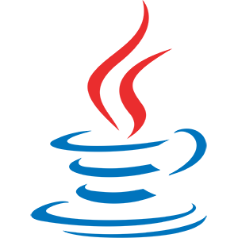
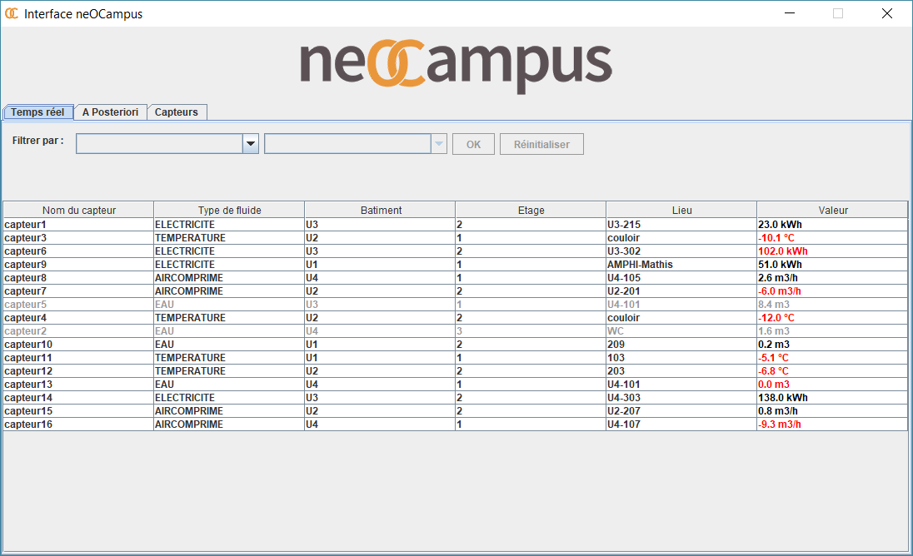
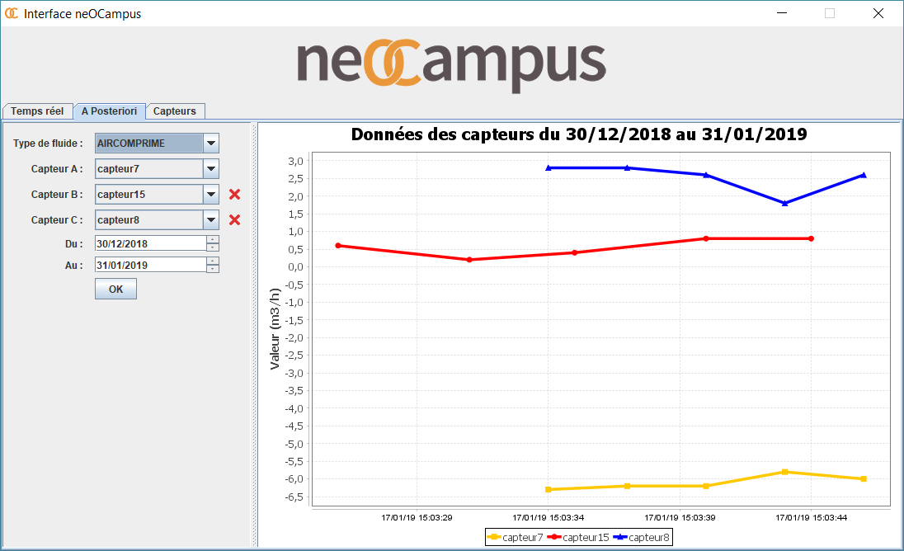
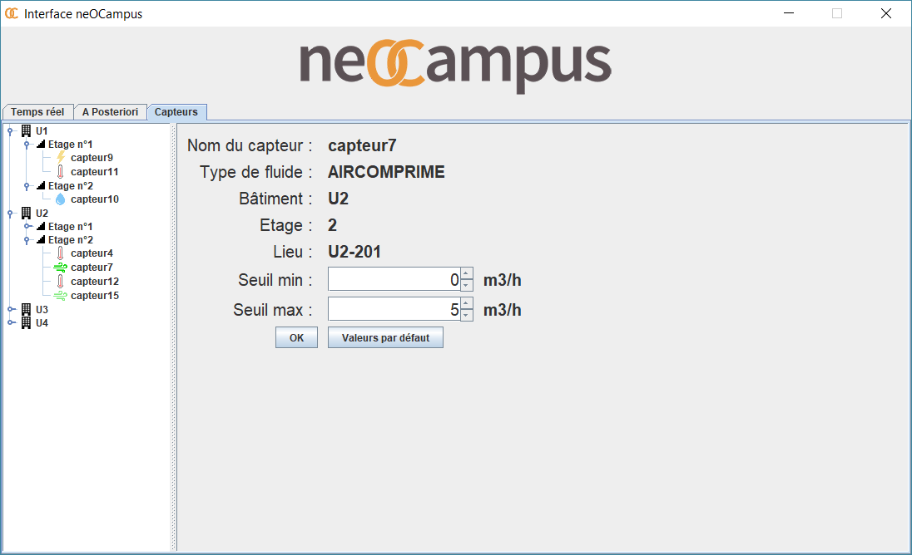

Projets Étudiants
Interface neOCampus (Novembre 2018 - Janvier 2019)
Objectif : Concevoir et développer une application Java qui permettra de visualiser les données de consommation énergétique et gérer les différents capteurs du projet neOCampus de l'Université Paul Sabatier.
Contexte : Projet tuteuré, travail en binôme, L3 Informatique à l'Université Paul Sabatier.
Outils :


Note finale : À venir...



Made with ♥ by Benoît Pannetier © 2019
Finding Space by Takahiro Sakamoto